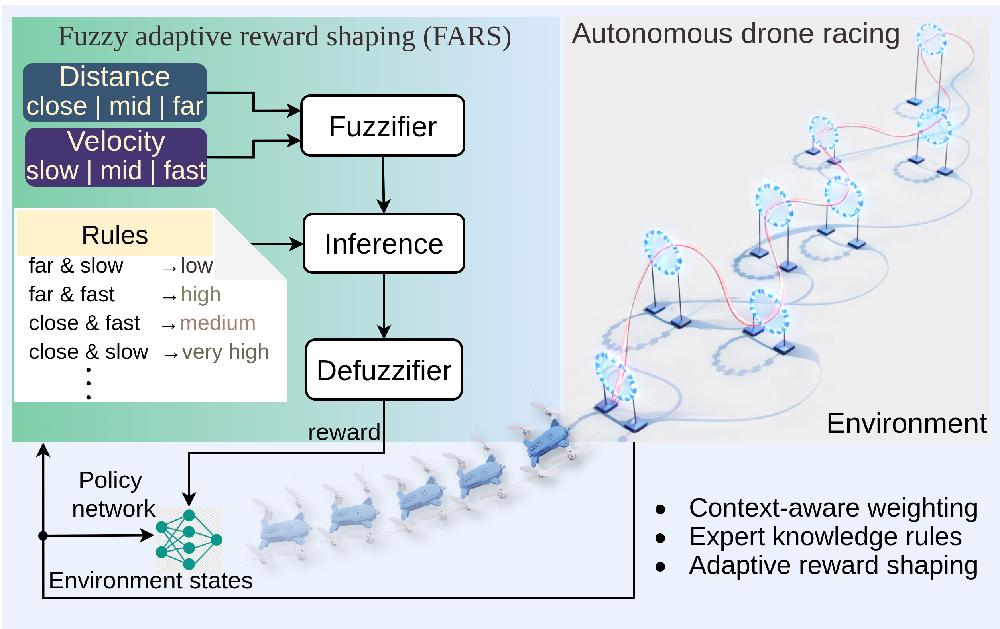
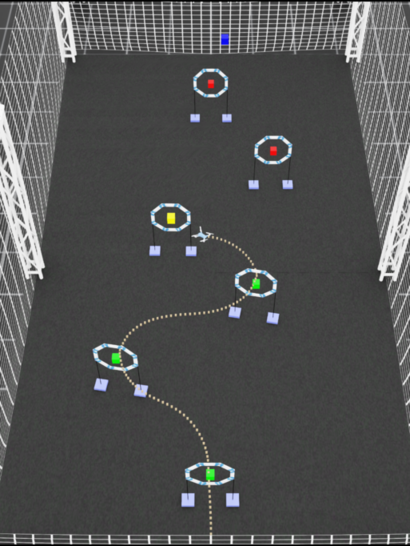
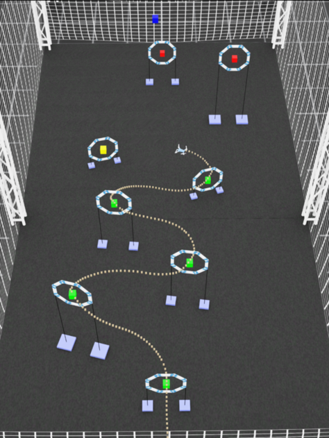
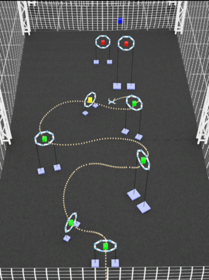
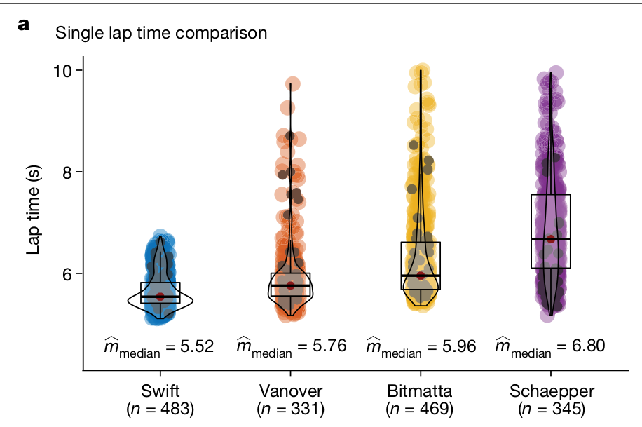

Reinforcement learning (RL) often struggles in real-world tasks with high-dimensional state spaces and long horizons, where sparse or fixed rewards severely slow down exploration and cause agents to get trapped in local optima. This paper presents a fuzzy-logic-based reward shaping method that integrates human intuition into RL reward design.
By encoding expert knowledge into adaptive, interpretable terms, fuzzy rules promote stable learning and reduce sensitivity to hyperparameters. The proposed method leverages these properties to adapt reward contributions based on the agent’s state, enabling smoother transitions between fast motion and precise control in challenging navigation tasks.
Extensive simulation results on autonomous drone racing benchmarks in IsaacLab show stable learning behavior and consistent task performance across scenarios of increasing difficulty. FARS achieves faster convergence and reduced performance variability across training seeds in more challenging environments, with success rates improving by up to approximately 5% compared to non-fuzzy reward formulations.
Encodes natural linguistic heuristics (e.g., fly fast when far away, decelerate and align when approaching gates) into a continuous, differentiable reward surface.
Develops both Mamdani (continuous smooth mapping) and Sugeno (piecewise efficient) inference formulations, resolving conflicts between speed and precision.
Validated on high-speed quadrotor drone racing through sequential gates in NVIDIA IsaacLab, demonstrating enhanced stability and lower seed variance.
In conventional reward shaping, scalar weights on distance and velocity can produce conflicting gradients: an agent rewarded for high speed may overshoot tight gates, while an agent penalised for speed may fly too conservatively. FARS resolves this trade-off via fuzzy linguistic rules:
Specifically:
• If the drone is far from the target gate and flies at high velocity, high reward is provided to accelerate travel.
• If the drone approaches the gate and reduces velocity, safe and centered gate passage is positively reinforced.
The total composite reward in FARS replaces rigid distance terms with the fuzzy velocity-distance reward:
FARS was evaluated across three distinct gate courses modeled in NVIDIA IsaacLab with full nonlinear quadrotor aerodynamics:

Gentle turns with wide gate spacing.

Moderate curvature requiring coordinated banking.

Aggressive zigzag angles and close gate intervals.
Compared against conventional potential-field reward shaping (PFBRS), FARS delivered:
• Up to ~5% higher success rate in completing full tracks.
• Significantly faster policy convergence with substantially reduced variance across training seeds.
• Smooth and agile flight trajectories without premature speed truncation.

If you find FARS or this methodology useful for your research, please cite:
@inproceedings{sahin2026fuzzy,
title = {Fuzzy Logic Theory-based Adaptive Reward Shaping for Robust Reinforcement Learning ({FARS})},
author = {{\c{S}}ahin, H{\"u}rkan and Dang, Van Huyen and Sayar, Erdi and Yegenoglu, Alper and Kayacan, Erdal},
booktitle = {IEEE World Congress on Computational Intelligence (WCCI)},
year = {2026},
publisher = {IEEE}
}